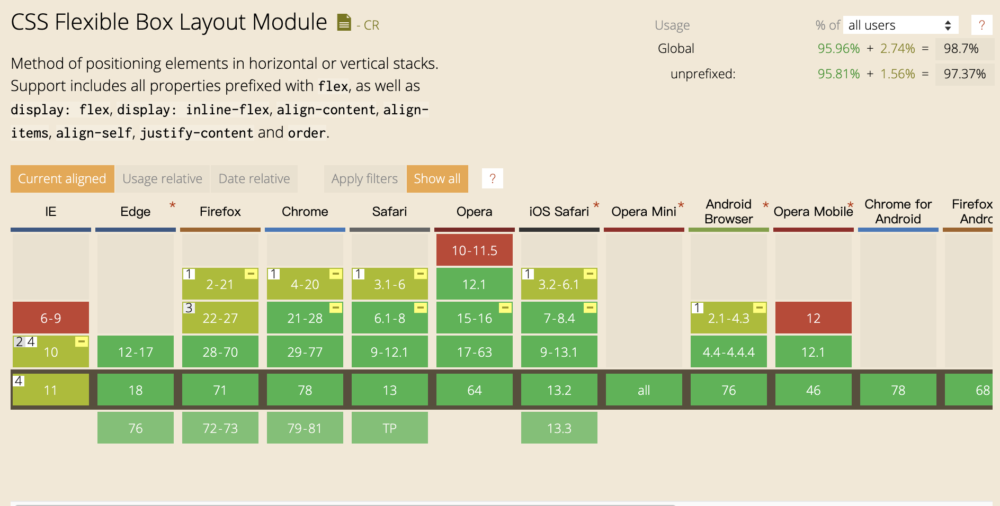

网页布局（layout）是 CSS 的一个重点应用。布局的传统解决方案，基于盒状模型，依赖 display 属性 + position属性 + float属性。它对于那些特殊布局非常不方便，比如，垂直居中就不容易实现。

2009年，W3C 提出了一种新的方案—-Flex 布局，可以简便、完整、响应式地实现各种页面布局。目前，它已经得到了所有浏览器的支持，这意味着，现在就能很安全地使用这项功能。

Flex布局是什么
Flex是Flexible Box的缩写。译为“弹性布局”，用来作为盒状模型提供最大的灵活性。
任何一个容器都可以指定为Flex布局。
1 | .box{ |
行内元素也可以使用Flex布局。
1 | .box{ |
Webkit内核的浏览器，必须加上-webkit前缀。
1 | .box{ |
注意，设为 Flex 布局以后，子元素的
float、clear和vertical-align属性将失效。
基本概念
采用 Flex 布局的元素，称为 Flex 容器（flex container），简称”容器”。它的所有子元素自动成为容器成员，称为 Flex 项目（flex item），简称”项目”。
我们把一个容器的 display 属性值改为 flex 或者 inline-flex 完成这一步之后，容器中的直系子元素就会变为 flex 元素。所有CSS属性都会有一个初始值，所以 flex 容器中的所有 flex 元素都会有下列行为：
- 元素排列为一行 (
flex-direction属性的初始值是row)。 - 元素从主轴的起始线开始。
- 元素不会在主维度方向拉伸，但是可以缩小。
- 元素被拉伸来填充交叉轴大小。
flex-basis属性为auto。flex-wrap属性为nowrap。
容器默认存在两根轴：主轴和交叉轴。主轴由 flex-direction 定义，另一根轴垂直于它。而Flexbox的所有属性都与这两根主轴有关。
主轴
主轴（main axis）由flex-direction定义，可以取四个值。
1 | flex-direction: column | column-reverse | row | row-reverse; |
选择了
row或者row-reverse，你的主轴将沿着 inline 方向延伸。选择
column或者column-reverse时，你的主轴会沿着上下方向延伸 — 也就是 block 排列的方向。
交叉轴
交叉轴（cross axis）垂直于主轴
flex-direction(主轴) 设成了row或者row-reverse的话，交叉轴的方向就是沿着列向下的。主轴方向设成了
column或者column-reverse，交叉轴就是水平方向。
起始线和终止线
主轴的开始位置（与边框的交叉点）叫做main start，结束位置叫做main end；交叉轴的开始位置叫做cross start，结束位置叫做cross end。
项目默认沿主轴排列。单个项目占据的主轴空间叫做main size，占据的交叉轴空间叫做cross size。

容器的属性
以下6个属性设置在容器上。
- flex-direction
- flex-wrap
- flex-flow
- justify-content
- align-items
- align-content
flex-direction属性
flex-direction属性决定主轴的方向（即项目的排列方向）。
1 | flex-direction: row | row-reverse | column | column-reverse; |
它可能取四个值：
row（默认值）：主轴为水平方向，起点在左端。row-reverse：主轴为水平方向，起点在右端。column：主轴为垂直方向，起点在上沿。column-reverse：主轴为垂直方向，起点在下沿。
flex-wrap属性
默认情况下，项目都排在一条线（又称”轴线”）上。flex-wrap属性定义，如果一条轴线排不下，如何换行。
1 | flex-wrap: nowrap | wrap | wrap-reverse; |
它可能取三个值：
nowrap（默认）：不换行。wrap：换行，第一行在上方。wrap-reverse：换行，第一行在下方。
flex-flow属性
flex-flow属性是flex-direction属性和flex-wrap属性的简写形式，默认值为row nowrap。
1 | flex-flow: <flex-direction> || <flex-wrap>; |
justify-content属性
justify-content属性定义了项目在主轴上的对齐方式。
1 | justify-content: flex-start | flex-end | center | space-between | space-around; |
它可能取5个值，具体对齐方式与轴的方向有关。
flex-start（默认值）：主轴的起点对齐flex-end：主轴的终点对齐center： 主轴的中点对齐space-between：主轴两端对齐，项目之间的间隔都相等。space-around：每个项目两侧的间隔相等。所以，项目之间的间隔比项目与边框的间隔大一倍。
align-items属性
align-items属性定义项目在交叉轴上如何对齐。
1 | align-items: flex-start | flex-end | center | baseline | stretch; |
它可能取5个值。具体的对齐方式与交叉轴的方向有关，下面假设交叉轴从上到下。
flex-start：交叉轴的起点对齐。flex-end：交叉轴的终点对齐。center：交叉轴的中点对齐。baseline: 项目的第一行文字的基线对齐。stretch（默认值）：如果项目未设置高度或设为auto，将占满整个容器的高度。
align-content属性
align-content属性定义了多根轴线的对齐方式。如果项目只有一根轴线，该属性不起作用。
即该属性对单行弹性盒子模型无效。（即：带有 flex-wrap: nowrap）。
1 | align-content: flex-start | flex-end | center | space-between | space-around | stretch; |
该属性可能取6个值。
flex-start：与交叉轴的起点对齐。flex-end：与交叉轴的终点对齐。center：与交叉轴的中点对齐。space-between：与交叉轴两端对齐，轴线之间的间隔平均分布。space-around：每根轴线两侧的间隔都相等。所以，轴线之间的间隔比轴线与边框的间隔大一倍。stretch（默认值）：轴线占满整个交叉轴。
项目的属性
以下6个属性设置在项目上。
orderflex-growflex-shrinkflex-basisflexalign-self
order属性
order属性定义项目的排列顺序。数值越小，排列越靠前，默认为0。
1 | order: <integer>; /* default 0 */ |
flex-grow属性
flex-grow属性定义项目的放大比例，默认为0，即如果存在剩余空间，也不放大。
1 | flex-grow: <number>; /* default 0 */ |
如果所有项目的flex-grow属性都为1，则它们将等分剩余空间（如果有的话）。如果一个项目的flex-grow属性为2，其他项目都为1，则前者占据的剩余空间将比其他项多一倍。
flex-shrink属性
flex-shrink属性定义了项目的缩小比例，默认为1，即如果空间不足，该项目将缩小。
1 | flex-shrink: <number>; /* default 1 */ |
如果所有项目的flex-shrink属性都为1，当空间不足时，都将等比例缩小。如果一个项目的flex-shrink属性为0，其他项目都为1，则空间不足时，前者不缩小。
负值对该属性无效。
flex-basis属性
flex-basis属性定义了在分配多余空间之前，项目占据的主轴空间（main size）。浏览器根据这个属性，计算主轴是否有多余空间。它的默认值是auto，即项目的本来大小。
1 | flex-basis: <length> | auto; /* default auto */ |
它可以设为跟width或height属性一样的值（比如350px），则项目将占据固定空间。
flex属性
flex属性是flex-grow, flex-shrink 和 flex-basis的简写，默认值为0 1 auto。后两个属性可选。
1 | flex: none | [ <'flex-grow'> <'flex-shrink'>? || <'flex-basis'> ] |
该属性有两个快捷值：auto (1 1 auto) 和 none (0 0 auto)。
建议优先使用这个属性，而不是单独写三个分离的属性，因为浏览器会推算相关值。
align-self属性
align-self属性允许单个项目有与其他项目不一样的对齐方式，可覆盖align-items属性。默认值为auto，表示继承父元素的align-items属性，如果没有父元素，则等同于stretch。
1 | align-self: auto | flex-start | flex-end | center | baseline | stretch; |
该属性可能取6个值，除了auto，其他都与align-items属性完全一致。
参考资料
https://developer.mozilla.org/zh-CN/docs/Web/CSS/CSS_Flexible_Box_Layout/Basic_Concepts_of_Flexbox
https://developer.mozilla.org/zh-CN/docs/Web/CSS/CSS_Box_Alignment/Box_Alignment_in_Flexbox